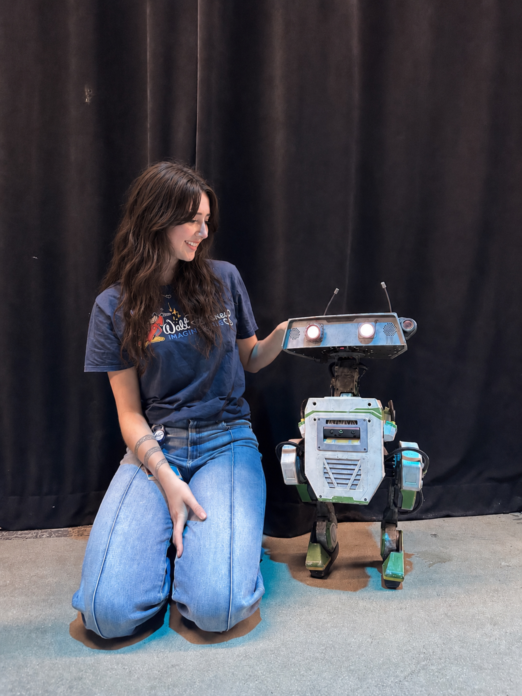

About Me
Creative Technologist & ML Researcher
Hi, I’m Kaylie, a creative technologist and graduate researcher pursuing my M.S. in Integrated Design & Media at NYU Tandon. My work sits at the intersection of machine learning, real-time systems, and immersive experience design, with a focus on using emerging technologies to create expressive, reactive, and intelligent characters and experiences.
Most recently, I worked as a Creative Technologist Intern with Walt Disney Imagineering Research & Development, exploring emerging technologies for interactive character experiences across real-time previsualization, multimodal perception, guest research, and expressive character systems. At NYU, my research has explored 3D affordance learning, intelligent Unreal Engine tooling, computer vision and multimodal AI, and reinforcement learning for autonomous character behavior.
I’m especially interested in autonomous characters, robotics, animatronics, games, and interactive experiences that bridge digital intelligence with the physical world. Across my work, I’m always thinking about how technology can make an experience feel more responsive, believable, alive, and emotionally memorable.
Outside of research and building things, I love playing video games, reading, painting, and playing volleyball.
Education
Professional Certifications
University of California, Santa Cruz. Covered C++ fundamentals through game systems programming, memory management, and engine-level architecture.
Epic Games. Professional certification covering Unreal Engine production workflows, real-time rendering, and gameplay systems development.
